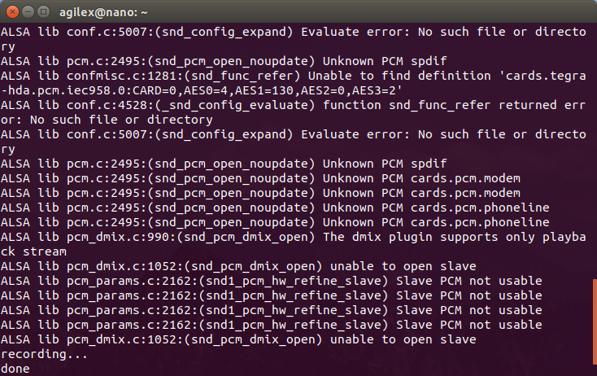
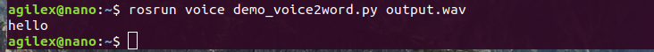

Speech To Text
Overview
Sound is recorded to a .wav file using the Nano’s external sound card. Voice recognition is done with the voice library pocketsphinx.
Usage
Note
Use Ctrl + C command to end all the processes before running the below commands.
Start a ROS master. Open a new terminal, and enter the command:
$ roscore
Run the voice recording script from the voice package. When “recording” appears in the terminal, start to record the voice. After 3 seconds, the recording is complete, and “Done” will appear on the terminal. The .wav file will be saved to a file in the current directory called
output.wav. Open a new terminal, and enter the command:$ rosrun voice demo_record_voice.py
Once the recording is saved, run the speech recognition script. The recognized text will be printed to the terminal. Using the same terminal, enter the command:
$ rosrun voice demo_voice2word.py output.wav